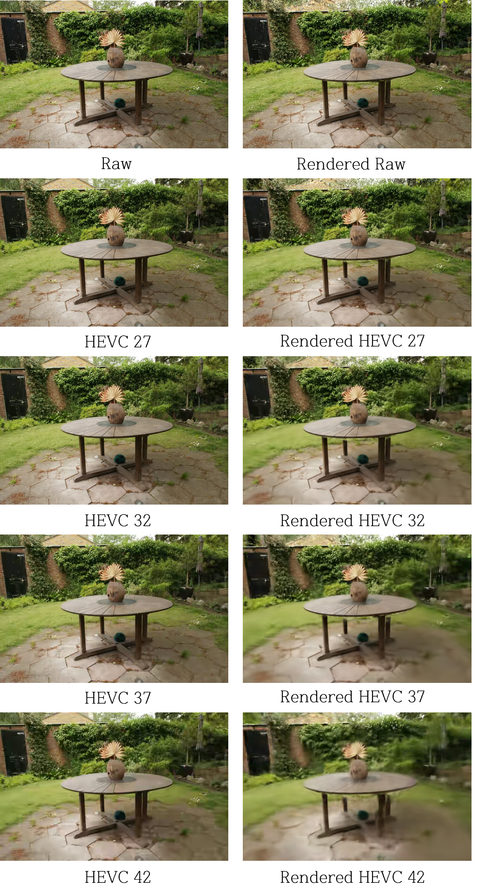
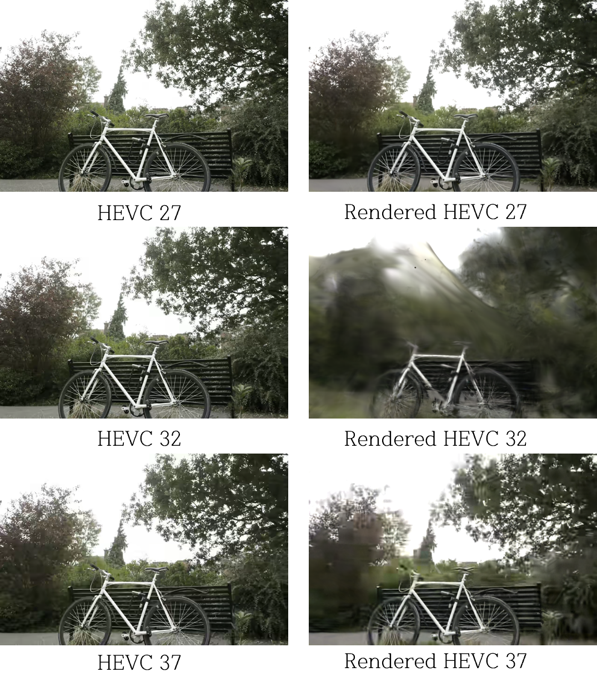

Analysis Results
Quantitative and Qualitative comparison of 3DGS and VGGT under compression.
I. 3D Gaussian Splatting Analysis
Evaluating reconstruction quality under varying compression levels (CRF/QP).
Quantitative Results (PSNR / SSIM / LPIPS)
| Dataset | Compression | PSNR (↑) | SSIM (↑) | LPIPS (↓) |
|---|---|---|---|---|
| Truck | Original | 32.45 | 0.94 | 0.08 |
| Truck | QP 30 | 28.12 | 0.88 | 0.15 |
Qualitative Results: HEVC Compression

Variation of 3DGS Rendering Quality with HEVC Compression Levels for the Garden Scene

Outlier Case in HEVC Rendering: Bicycle Scene
Qualitative Results: JPEG Compression

Variation of 3DGS Rendering Quality with JPEG Compression Levels for the Kitchen Scene

SSIM Improvement After 3DGS Rendering Compared to JPEG Compressed Data in the Bonsai Scene
II. VGGT Analysis
Geometric robustness analysis using Chamfer Distance and AUC.
Geometric Accuracy (Chamfer Distance / AUC)
| Dataset | Method | Chamfer Dist (↓) | AUC (↑) | Point Count |
|---|---|---|---|---|
| Scene 1 | VGGT (Base) | 0.015 | 0.85 | 15,420 |
| Scene 1 | VGGT (Compressed) | 0.034 | 0.72 | 12,100 |
Visual Comparison
Original
High Compression